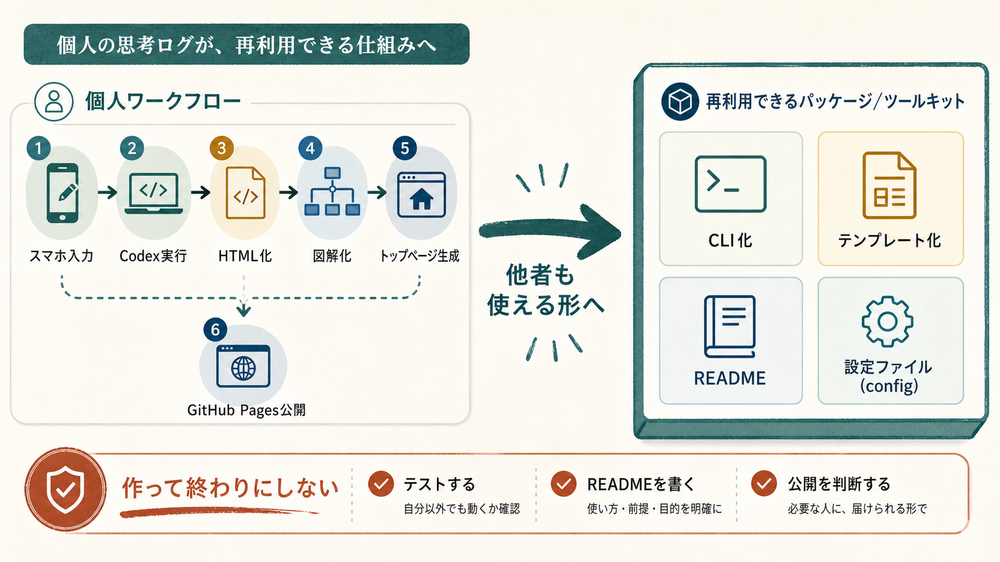

Introspection Debug Log / 2026-06-09
publicnotesを他者も使えるアプリに整えた日
今日は、個人用だったpublicnotesを、他者も初期化して使えるCodex連携型の静的ノート生成アプリへ整えた。スマホで書いた気づきが、CodexによってHTML化、紹介文化、図解化、トップページ生成、GitHub Pages公開まで進む仕組みを整理した。さらにCLI、テンプレート、README、設定ファイル、npm配布の形まで用意した。
思考のデバッガーからの突っ込み
かなり前進しています。ただし「パッケージ化できた」と言うと、少しだけ箱の完成に酔いやすいです。箱ができたから商品になった、とは限りません。READMEを読んだ人が迷わず最初の一回を通せるか。そこまで見て、ようやく他者向けです。
天邪鬼に見るなら、今日の成果は完成ではなく、他者に渡して検証できる入口を作ったことです。秘密基地は楽しい。でも他者向けツールにするなら、入口に看板、床に段差なし、トイレの場所くらいは必要です。
今回の転換
今日の大きな転換は、仕組みの主語が「自分」から「他者も使える」へ移ったことです。`notes/` にHTMLを貯めるだけでなく、`publicnotes init`、`publicnotes build`、テンプレート、設定ファイル、配布除外まで整えた。これは単なる整理ではなく、運用を再現可能にする作業です。
一方で、Codex、画像生成、GitHub Pages、npm配布という要素が増えたことで、利用者にとっての難所も増えています。次の課題は、機能追加ではなく「最初の一回をどれだけ迷わず通せるか」です。
一段深掘りする問い
この仕組みを他者に渡すとき、最初に体験してほしい価値は HTMLが自動でできる便利さですか、自分の気づきが整理されて残る感覚ですか、それともCodexを自分の思考パートナーとして扱える驚きですか？
感情の起伏
スマホ、Codex、Mac、GitHub Pagesの役割を分け、仕組みの全体像が見えた。
個人用の思考ログCMSを、CLIとテンプレートを持つ再利用可能なキットへ変換した。
README、設定ファイル、npm配布の形、別ディレクトリでの動作確認まで整えた。
次は、他者が最初の一回で迷わず使えるかを検証する必要がある。
メモ: パッケージ化はゴールではなく、他者に試してもらうための玄関づくり。玄関ができたら、次は人を招いて段差を見つける。
他者紹介用メモ
スマホで書いた気づきをCodexが受け取り、HTML、紹介文、図解、トップページ、GitHub Pages公開までつなぐ仕組みを、他者も試せる形へ整えた話です。便利な個人ツールを作って終わらせず、再現できるキットにするために何を整えたのかを振り返っています。
図解
